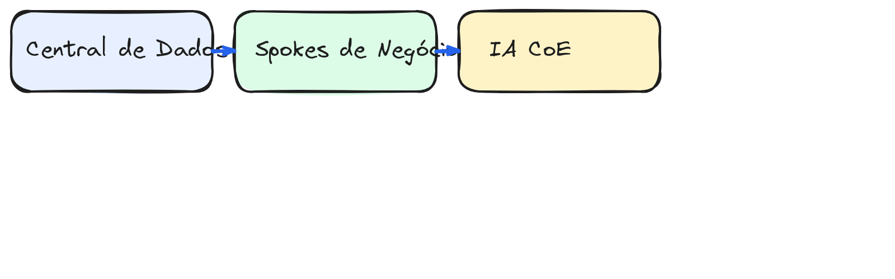

Cultura de Dados e IA no Varejo
Do discurso à execução: como construir vantagem competitiva com dados e inteligência artificial
O varejo está em um ponto de virada
O varejo brasileiro e global enfrenta compressão simultânea de margem, pressão por experiência omnichannel e aceleração digital forçada pós-pandemia. Dados e IA deixaram de ser "projetos de inovação" e passaram a ser infraestrutura operacional — conforme destacou a KPMG no estudo de 2026: "O debate deixou de ser se a IA mudará o setor; a questão agora é como, quando e quem conseguirá transformar potencial em resultado concreto."
Pressão externa
- Consumidor espera personalização em tempo real
- Marketplaces digitais disputam o mesmo cliente
- Logística de última milha exige previsão granular
Pressão interna
- Decisões ainda baseadas em intuição e planilha
- Times de BI isolados dos negócios
- Dados espalhados em silos fragmentados
IA agêntica: a revolução que o varejo não pode ignorar
A NRF 2026 consolidou um novo paradigma: se até 2025 falávamos em "aplicações de IA", em 2026 a IA agêntica — sistemas especializados, autônomos e autoaprendentes — assume tarefas complexas de negócio. Não é mais sobre chatbots ou recomendações; agentes autônomos fazem reposição, precificação, atendimento e logística preditiva.
64%
dos CEOs do varejo já priorizam investimento em IA, segundo KPMG CEO Outlook 2025
93%
dos varejistas globais projetam crescimento nos investimentos em IA Generativa até 2026
47%
dos varejistas brasileiros já utilizam alguma forma de IA em suas operações (Central do Varejo, 2025)
Cinco pilares de uma cultura de dados e IA
Cultura não é workshop de conscientização. É sistema de incentivos, processos e hábitos que tornam o uso de dados o caminho natural. Segundo a CNDL (Central do Varejo), "mais importante que implementar ferramentas de IA é desenvolver uma cultura organizacional que valorize dados, experimentação e aprendizado contínuo."
1. Liderança datificada
O C-suite não apenas endossa — usa dashboards diariamente, pede evidência antes de opinião e recompensa decisões baseadas em dado. Na prática: data-driven decisions no board, não só no BI.
2. Democratização com governança
Dados acessíveis a todos, com regras claras de quem pode ver o quê. Self-service analytics com guardrails. A Maloka destaca que o principal desafio dos médios varejistas é a fragmentação de dados entre sistemas.
3. Produtos de dados como produto
Datasets, modelos e dashboards têm dono, SLA, versionamento e usuário definido — tratados com a seriedade de um produto externo.
4. Experimentação estruturada
Hipóteses testadas com A/B testing, feature flags e métricas de sucesso definidas antes do deploy. A cultura de experimentação contínua permite aprender com erros e escalar o que funciona.
5. Talentos e capacitação
Data literacy em todos os níveis: da caixa de checkout ao board. Analistas com domínio de negócio, gestores com leitura crítica de métricas. A CNDL recomenda parcerias com startups e consultorias para transferência de conhecimento.
Modelo operacional: Centralização × Empoderamento
A tensão entre "centralizar tudo" e "cada área faz o que quer" é o principal entrave. A resposta madura é um modelo em hub & spokes, onde a central define o "como", os spokes definem o "o quê" e a CoE garante a replicação entre domínios.

🏢 Hub (Central de Dados)
Plataforma, infraestrutura, governança, segurança, ferramentas core. Time enxuto e habilitador.
🔗 Spokes (Times de Negócio)
Analistas de dados embedded em merchandising, logística, marketing, CX. Foco em domínio.
🤖 IA Center of Excellence
Time especializado em modelos, MLOps, ética e cases de uso transversais. Cura e escala.
Casos de uso prioritários no varejo
Nem tudo precisa ser transformacional agora. Foque em casos com ROI claro e viabilidade técnica imediata. A KPMG identificou quatro estágios de maturidade na jornada com IA: inspiração e intenção, exploração e cocriação, compras inteligentes e propriedade dinâmica.
📊 Previsão de Demanda
Reduzir quebra de estoque e excesso de inventário. Modelo considera sazonalidade, eventos locais e clima.
Impacto típico: −25% stockout, −15% overstock
💰 Precificação Dinâmica
Ajuste automático de preços por canal, concorrência e elasticidade. Agentes autônomos fazem o ciclo completo em 2026.
Impacto típico: +3–5% margem bruta
🛒 Recomendação Personalizada
Motor de recomendação no app/site baseado em comportamento, não apenas histórico de compras.
Impacto típico: +12% ticket médio
🔄 Reabastecimento Automatizado
Trigger automático de reposição baseado em previsão + consumo real, eliminando pedidos manuais.
Impacto típico: −40% horas de planejamento
Quick wins (primeiro trimestre): dashboard de vendas em tempo real, automação de relatórios de performance, detecção de anomalias em vendas por loja.
Capacidades necessárias
Antes de contratar ferramentas, identifique as capacidades que precisam ser construídas ou adquiridas. A Maloka aponta que o primeiro passo é quebrar os silos de dados — sem integração, nenhuma IA funciona de verdade.
Técnicas
- Data Engineering: pipelines ETL/ELT, streaming, data lakehouse
- Data Science / ML: modelagem preditiva, experimentação, MLOps
- Analytics Engineering: transformação de dados, semantic layer
- Plataforma: cloud, orquestração, monitoramento
Organizacionais
- Data Literacy: capacitação de gestores e times operacionais
- Data Governance: catálogo de dados, linhagem, qualidade
- Product Thinking: tratar dados como produto interno
- Change Management: adesão cultural, redução de resistência
Roadmap de implementação em fases
Transformação cultural não acontece em um big bang. Estruture em fases com objetivos claros e entregas tangíveis.
Fundação
- Audit de dados existentes e maturidade
- Definir data strategy com sponsorship do CEO
- Montar Hub (3–5 pessoas core)
- Selecionar ferramentas de plataforma
Quick Wins
- Dashboards de vendas em tempo real
- Automação de 3 relatórios críticos
- Primeiro modelo de previsão de demanda
- Capacitação de 50 gestores
Escalonamento
- Embedded analysts em 4 áreas de negócio
- Data catalog e governança ativa
- MLOps pipeline para 2–3 modelos
- Precificação dinâmica em piloto
Transformação
- IA generativa para atendimento e search
- Automação completa de reabastecimento
- Data products expostos via APIs internas
- Cultura auto-sustentável, métricas de adoção
Riscos e antipadrões a evitar
A maioria das iniciativas de data & IA fracassa não por tecnologia, mas por fatores organizacionais. A CNDL identifica três desafios centrais: resistência à mudança, qualidade e integração de dados, e escassez de talentos especializados.
🚫 "Data Lake como lixeira"
Jogar todos os dados em uma plataforma sem governança gera um "data swamp" que ninguém confia.
🚫 "Big bang de ferramenta"
Comprar a plataforma "A" e esperar mágica. Ferramenta não substitui cultura, processo e pessoas.
🚫 "BI centralizado como único caminho"
Criar um bottleneck onde toda consulta passa por um time de 3 pessoas. Resultado: filas e frustração.
🚫 "Projetos sem métrica de sucesso"
Deploy de modelo sem definição clara de como medir se funcionou. Custo de oportunidade invisível.
🚫 "IA como projeto de TI isolado"
A CNDL enfatiza: o erro mais comum é tratar IA como projeto de TI quando ela é transformação cultural que deve envolver todas as áreas do negócio.
Recomendações para começar
Fazer
- Nomear um Chief Data Officer com poder de decisão
- Começar pelo problema de negócio, não pela ferramenta
- Investir em engenharia de dados antes de ciência de dados
- Criar um "caminho feliz" com um caso de uso de alto impacto
- Medir adoção, não apenas deploy de tecnologia
- Capacitar gestores a lerem e usarem dados diariamente
Não fazer
- Começar com IA generativa como projeto piloto (complexo demais)
- Ignorar qualidade de dados em prol de velocidade
- Centralizar todas as decisões no time de dados
- Comprar ferramentas antes de mapear necessidades
- Subestimar o esforço de change management
Fontes e referências
- KPMG Brasil (2026) — Inteligência Artificial no Setor Varejista — IA agêntica, NRF 2026, 64% de CEOs priorizando IA
- KPMG Global (2026) — AI in Retail — Global Lessons from Strategy to Storefront — tendências globais e casos regionais
- Central do Varejo / CNDL (2025) — Cultura de IA no Varejo: Como Maximizar Resultados — 47% dos varejistas brasileiros usam IA
- McKinsey / QuantumBlack (2025) — State of AI 2025 — 88% de adoção com pilots iniciais, margem EBITDA 2,6x superior
- Bain & Company (2025) — IA e Data Analytics: uma nova era do varejo — IA como pré-requisito de sobrevivência
- Maloka (2025) — Cultura de Dados no Varejo — fragmentação de dados como desafio central
- Gartner (2025) — Top Data, Analytics and AI Trends for Retail CIOs in 2025
Diagrama: gerado via Excalidraw (modelo operacional Hub & Spokes)
O futuro do varejo
é decidido com dados
A pergunta não é se implementar — é o quanto você está atrasado.